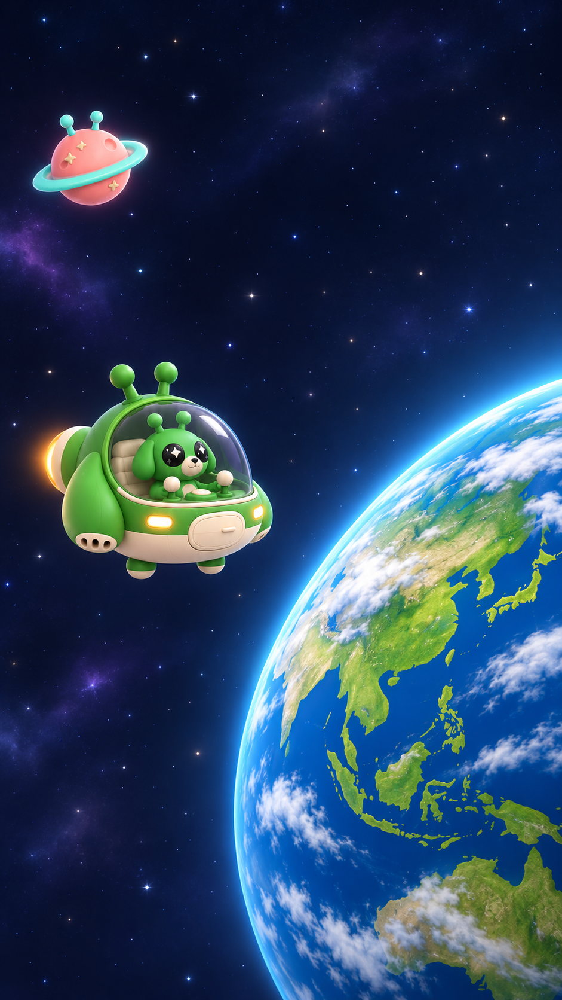

G01 · S01 시작 프레임. 영상 시작 입력.
0s / 생성됨

첨부 순서: R01, R02, R03, R04, R05
이미지 프롬프트 EN
Use case: illustration-story / identity-preserving keyframe production. Output ONE full-frame vertical 9:16 image. No text, logos, symbols, labels, map pins, inset maps, arrows, panels, borders or speech bubbles. This is an animation frame, not a storyboard sheet. Style: cute smooth cinematic 3D animation. No humans, real animal fur, photoreal dog, new clothes, blush, human lips, large teeth, human fingers, baby redesign or added props. Original adult Oejimong: exact approved head depth and front/three-quarter proportions, drooping green dog ears, TWO ball-tipped head antennas, original rounded triangular black eyes with a large white four-point star, small grey star and tiny diamond per open eye, cream muzzle around original rounded black nose and small mouth. Calm original little smile. Preserve eye motifs as fixed design, not floating pupils. Small steering motions only; no face deformation. Spacecraft: original green/cream body and ear-like side pods, TWO external ship antennas separate from pilot's two head antennas, ONE fully CLOSED transparent canopy, original single cream seat, original two slender green joystick stems with cream ball knobs and low central oval cream button. No second glass shell, raised lid, exterior overhead arch, open canopy, deployed ladder, invented radar console or side door. Earth is ONE globe ahead at RIGHT/lower-right; Eollastar is ONE small coral/mint planet far behind upper-left. Never swap them. Ship nose and pilot gaze toward SCREEN RIGHT/Earth. Earth stays larger than Eollastar. Lighting: cool blue-white Earth light from right/upper-right and warm soft engine light behind the ship on left. Do not mirror the flight axis. For S01: ship and pilot grow together; Earth grows; Eollastar shrinks. Planet surface landmarks rotate coherently. This is real travel plus camera approach, not a single uniform digital zoom of a still. For S02: camera is inside the same closed cockpit. No added external dome/canopy arch on top of the interior frame. Same Asia-facing Earth out the RIGHT window and same blue bounce light. REFERENCE ATTACHMENT ORDER: R01, R02, R03, R04, R05 Make the START of the S01 eight-second approach. Attach R01/R02 as character identity, R03 as closed vehicle, R04 as Eollastar, R05 as composition/story guide ONLY; remove all guide typography/arrows. Closed ship fully visible at left-midground around 30–40 percent frame width, nose right, original pilot small but recognisable inside glass with paws resting on controls. Eollastar small upper-left around 15–20 percent frame width. Earth is much larger on RIGHT/lower-right, partly cropped by right edge, visible curved blue limb and Asian/Indian Ocean region. Sparse navy stars and soft violet haze. This is the small-ship/less-close-Earth start, leaving room for the ship and Earth to GROW through later keyframes. Eollastar will recede. No title, engine flame explosion, warp tunnel or movement graphic. Entire ship silhouette and antennas in frame. Keep original adult face and original vehicle proportions.